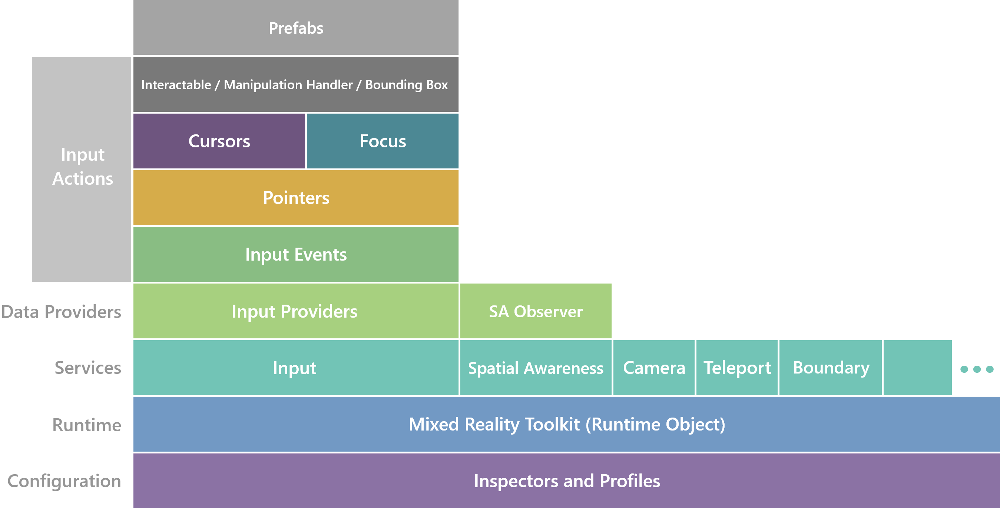

架构概述
要全面了解MRTK的内容，本文档中包含的架构信息将帮助您了解以下内容：
- MRTK的大型部分及其连接方式
- MRTK引入的概念在vanilla Unity中可能不存在
- 一些较大的系统（例如Input）如何工作
本部分并不是要教您如何执行任务，而是要教这些任务的结构以及原因。
众多受众，一个工具包
MRTK没有统一的受众。它被编写来支持用例，从第一次黑客马拉松到个人为企业构建复杂的，共享的经验。可能已经编写了一些代码和API，它们彼此之间的优化程度更高（即MRTK的某些部分似乎针对“一键配置(one click configure)”进行了优化），但需要注意的是，其中一些是出于历史和资源原因。随着MRTK的发展，应将构建的功能设计为可扩展以支持用例范围。
MRTK还具有在VR和AR体验中进行扩展的要求。构建部署在HoloLens 2或HoloLens 1上的可适当回退的应用程序应该很容易，并且构建针对OpenVR和WMR（和其他平台）的应用程序应该很简单。尽管团队有时可能会将特定的迭代重点放在特定的系统或平台上，但长期目标是为人们在何处构建混合现实体验提供广泛的支持。
高层级分解
MRTK既是用于快速获取混合现实（MR）体验的工具的集合，同时也是一个应用程序框架，它对自己的运行时、如何扩展和如何配置有自己的方式。
在较高层级，可以通过以下方式分解MRTK：

MRTK还包含另一套实用程序，它们与其余MRTK几乎没有依赖（仅举几例: build tools, solvers, audio influencers,smoothing utilities和line renderers）
架构文档的其余部分将从框架和运行时开始，从下至上，逐步发展到更有趣，更复杂的系统，例如输入。请查看目录以继续进行架构概述。